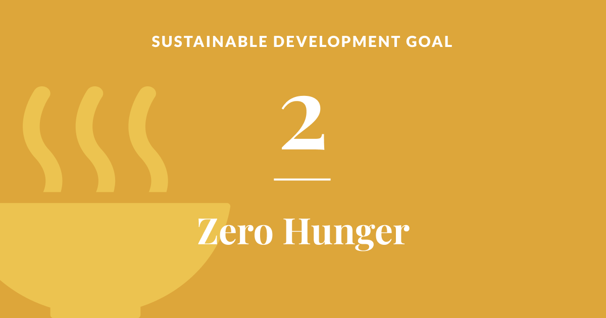

Why zeroHunger?
Why zeroHunger and its effects on our world.
June 19, 2024

Written in KNUST..
Why Zero Hunger? Understanding Sustainable Development Goal 2 Sustainable Development Goal 2 (SDG 2), also known as "Zero Hunger," is one of the 17 goals established by the United Nations in 2015 as part of the 2030 Agenda for Sustainable Development. The aim of SDG 2 is to end hunger, achieve food security, improve nutrition, and promote sustainable agriculture. This goal is crucial for several reasons, encompassing humanitarian, economic, environmental, and social dimensions. Humanitarian Importance At its core, the zero hunger goal is driven by the fundamental right of every individual to have access to sufficient, safe, and nutritious food. Despite significant progress in various parts of the world, hunger remains a stark reality for many. According to the Food and Agriculture Organization (FAO), as of 2020, nearly 690 million people were undernourished, a number that has likely increased due to the COVID-19 pandemic. Malnutrition is a leading cause of mortality, particularly among children, contributing to nearly half of all deaths in children under five. Addressing hunger is thus not only a matter of social justice but also of saving lives and improving quality of life for millions. Economic Impact Hunger and malnutrition have profound economic implications. Malnourished populations suffer from reduced productivity and impaired cognitive development, which limits educational outcomes and economic opportunities. For developing countries, this creates a cycle of poverty that is difficult to break. Investing in food security and nutrition can significantly boost economic growth and development. For instance, every dollar spent on interventions to reduce stunting among children can yield returns of up to $16 in terms of improved productivity and reduced healthcare costs. Hence, achieving zero hunger is not just a moral imperative but also an economic strategy to foster sustainable development. Environmental Sustainability Sustainable agriculture is a key component of SDG 2, aiming to ensure that food production systems are resilient and environmentally sound. Modern agricultural practices have often led to soil degradation, water scarcity, and loss of biodiversity. By promoting sustainable agricultural techniques, SDG 2 seeks to address these environmental issues. This includes practices like crop diversification, organic farming, and efficient water use, which help to maintain ecosystem health and ensure long-term food security. Climate change poses a significant threat to food security, making it imperative to develop agricultural systems that can withstand environmental shocks and stresses. Social Equity Hunger is often a symptom of broader social inequities. Vulnerable populations, including women, children, and rural communities, are disproportionately affected by food insecurity. SDG 2 aims to address these disparities by ensuring that all people, irrespective of their socio-economic status, have access to nutritious food. This involves empowering smallholder farmers, many of whom are women, with the tools, knowledge, and resources they need to improve their agricultural productivity and livelihoods. By focusing on the most vulnerable, SDG 2 promotes social equity and helps to build more inclusive societies. Global Cooperation Achieving zero hunger requires concerted efforts at local, national, and global levels. It necessitates partnerships between governments, international organizations, the private sector, and civil society. Initiatives such as the World Food Programme (WFP) and the International Fund for Agricultural Development (IFAD) play crucial roles in addressing hunger and promoting sustainable agriculture worldwide. Furthermore, technological innovations and scientific advancements in agriculture can offer new solutions to the challenges of food security. In conclusion, zero hunger is a pivotal goal within the Sustainable Development Agenda, intersecting with various aspects of human development, economic stability, environmental sustainability, and social equity. Addressing hunger is not only about feeding people but also about fostering a world where everyone can thrive. Through collaborative efforts and sustainable practices, achieving SDG 2 is possible, leading to a healthier, more prosperous, and more equitable global community.
About the author

Vera Effah, Environmental Science 4, Department of Environmental Science, College of Science, Kwame Nkrumah University of Science and Technology.
Popular Post